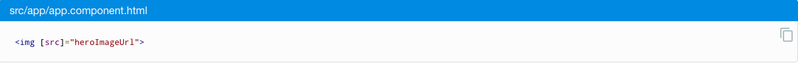

<div class="grammar_container">
  <section>
    <h1 class="grammar_title">语法糖和生命周期</h1>
    <h2>1、插值表达式</h2>
    <p class="describe_text">要显示组件的属性，最简单的方式就是通过插值表达式 (interpolation) 来绑定属性名。 要使用插值表达式，就把属性名包裹在双花括号里放进视图模板。</p>
    
    <h2>2、使用 ngFor 显示数组属性</h2>
    <p class="describe_text">注意看 ngFor 双引号表达式中的 hero，它是一个模板输入变量。</p>
    
    
    <p class="warning_text">不要忘记 *ngFor 中的前导星号 (*)。它是语法中不可或缺的一部分。</p>
    <h2>3、通过 NgIf 进行条件显示</h2>
    <p class="describe_text">有时，应用需要只在特定情况下显示视图或视图的一部分。Angular 的 ngIf 指令会根据一个布尔条件来显示或移除一个元素。</p>
    
    <h2>4、属性绑定</h2>
    <p class="describe_text">当要把视图元素的属性 (property) 设置为模板表达式时，就要写模板的属性 (property) 绑定。</p>
    
    
    
    <h2>5、模板引用变量 ( #var )</h2>
    <p class="describe_text">模板引用变量通常用来引用模板中的某个 DOM 元素，它还可以引用 Angular 组件或指令或Web Component。使用井号 (#) 来声明引用变量。</p>
    
    <p class="describe_text">#phone 的意思就是声明一个名叫 phone 的变量来引用 &lt;input&gt; 元素。</p>
    
    <p class="describe_text">你可以在模板中的任何地方引用模板引用变量。 比如声明在 &lt;input&gt;上的 phone 变量就是在模板另一侧的 &lt;button&gt; 上使用的。</p>
    <h2>6、事件绑定(event)</h2>
    <p class="describe_text">事件绑定允许你侦听某些事件，比如按键、鼠标移动、点击和触屏。</p>
    
    <h2>7、双向数据绑定</h2>
    <p class="describe_text">你经常需要显示数据属性，并在用户作出更改时更新该属性。在元素层面上，既要设置元素属性，又要监听元素事件变化。Angular 为此提供一种特殊的双向数据绑定语法：[(x)]。 [(x)] 语法结合了属性绑定的方括号 [x] 和事件绑定的圆括号 (x)。</p>
    
    <p class="describe_text">你可以通过分别绑定到 &lt;input&gt; 元素的 value 属性和 input 事件来达到同样的效果。</p>
    
    <h2>8、管道操作符( | )</h2>
    <p class="describe_text">在绑定之前，表达式的结果可能需要一些转换。例如，可能希望把数字显示成金额、强制文本变成大写，或者过滤列表以及进行排序。</p>
    

  </section>
</div>
